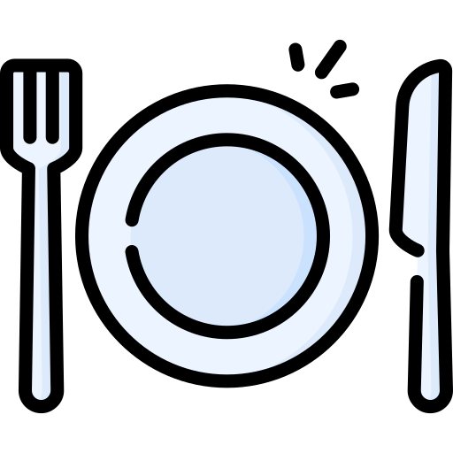

SEGUNDA FEIRA

O feijão é uma das melhores fontes vegetais de ferro, cuja ausência é uma das principais causas da anemia ferropriva. A maior parte dos feijões contém cerca de 5 mg de ferro a cada 100 g, mas o rajado, por exemplo, pode chegar a 18 mg do mineral na mesma porção. Além disso, eles são opções para aumentar os níveis de hemoglobina, pois possuem ácido fólico e vitamina C na composição.
O frango é rico em niacina (vitamina B3), essencial para a proteção contra o câncer. Uma pequena porção de carne de frango podem atender as necessidades de niacina para o dia inteiro. O selênio presente na carne de frango também ajuda na proteção contra a doença.
Rico em vitaminas. Outra grande vantagem do amido de milho é que ele é rico nas vitaminas A, E e do complexo B. A primeira não só auxilia o crescimento como também é boa para a vitalidade do cabelo e da pele. Já a vitamina E é conhecida por ser um potente antioxidante.
Sucos naturais de frutas, por exemplo, são fontes de diversos nutrientes importantes para o nosso corpo.

O ovo é rico em proteínas, que fornecem energia para o organismo, além de ter boas quantidades de ferro e vitaminas do complexo B, que melhoram a oxigenação e o transporte de nutrientes no organismo, promovendo o ganho de massa muscular
O arroz é bastante nutritivo. Mingau feito a partir deste cereal contém muitos nutrientes úteis. Assim, 100 gramas deste prato, fervidos em água, contém 1,4 g de proteínas, 0,1 g de gordura, 17,5 g de carboidratos e 79 kcal. Uma porção moderada desse prato nutritivo contribui para uma boa saturação, mas não leva a um conjunto de quilos extras.